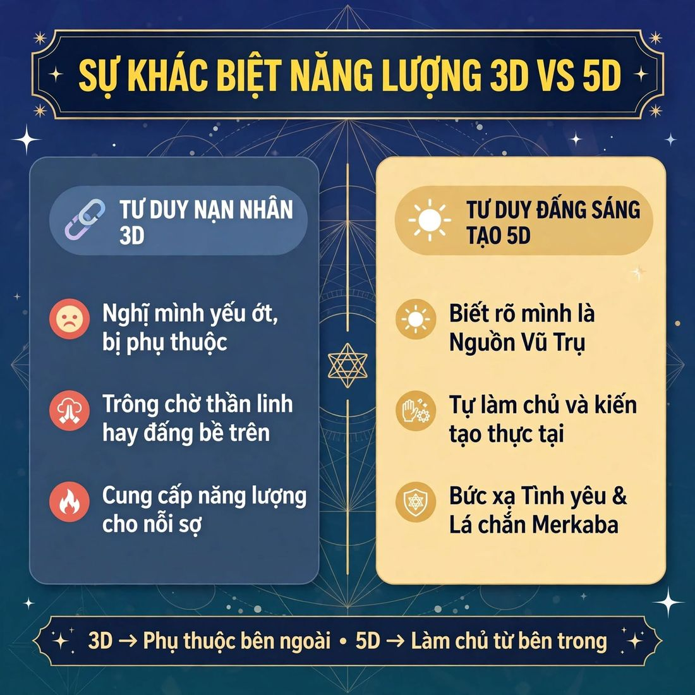
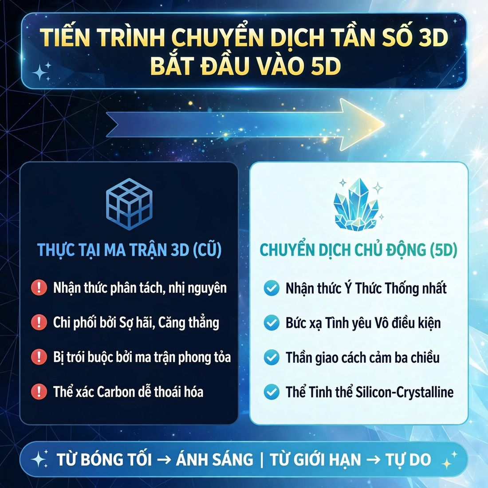
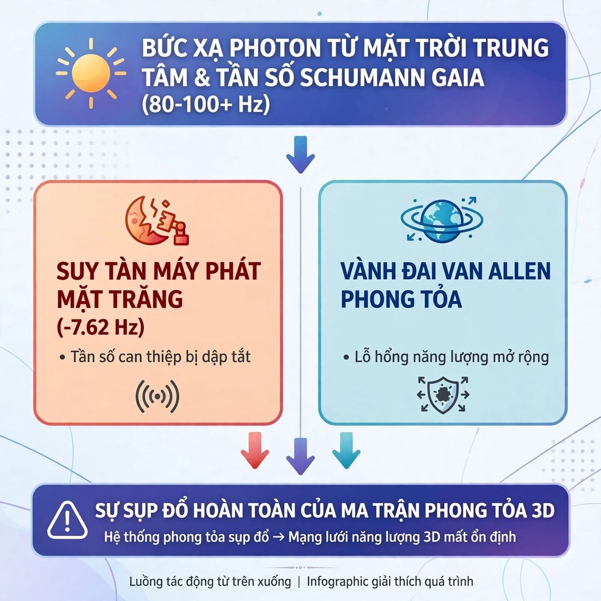
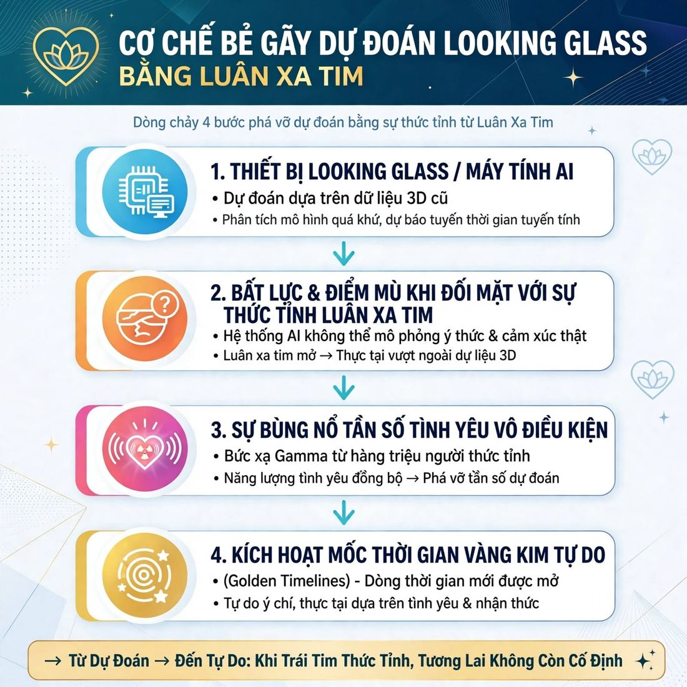
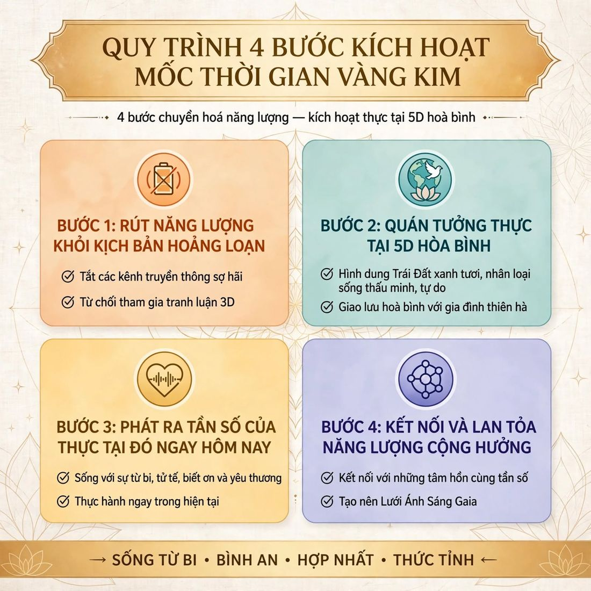
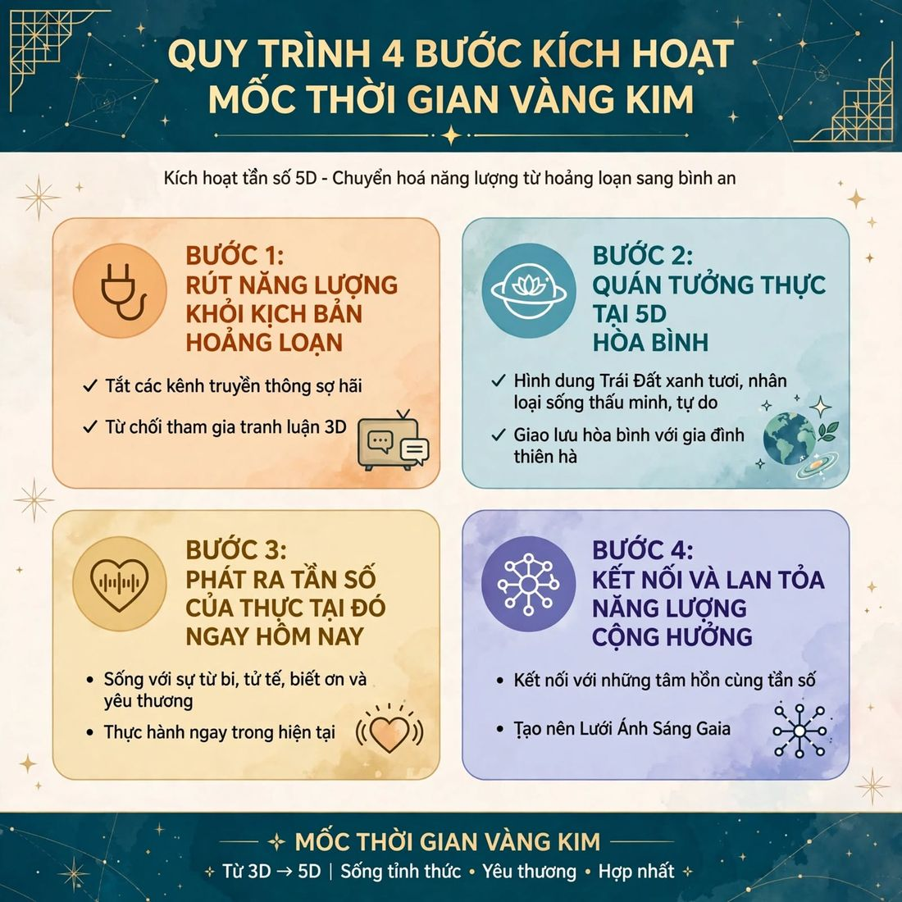

Trang chủ / Chuyên đề 9: Cẩm Nang Tâm Thức Vũ Trụ / Kỳ 90
Chuyên đề 9 · Kỳ 90 / 90
TẦN SỐ 5D, KỶ NGUYÊN HOÀN LƯƠNG & TƯƠNG LAI TÂM THỨC NHÂN LOẠI

1. Bản Chất Thật Sự Của Sự Thăng Lên 5D: Chuyển Dịch Dải Tần Nhận Thức
Trong các tài liệu truyền thông 3D và các trường phái siêu hình học sai lệch, tiến trình "Thăng Lên 5D" (Ascension) thường bị giật gân hóa thành một thảm họa tận thế, sự hủy diệt vật lý của Trái Đất, hoặc việc con người đột ngột biến mất vào một không gian huyền bí. Dưới góc nhìn của vật lý lượng tử thiên hà và tri thức từ Hội Đồng Andromeda cũng như Liên Đoàn Thế Giới Thiên Hà (GFW), sự thật hoàn toàn khác biệt: Thăng Lên 5D Không Phải Là Sự Sự Biến Mất Vật Lý, Mà Là Tiến Trình Chuyển Dịch Dải Tần Số Nhận Thức CỦA TÂM THỨC.
Tiến trình thăng hoa 5D diễn ra ngay tại đây và ngay trong lúc này, bên trong chính thể xác và tâm trí của mỗi con người Trái Đất:
Bạn không cần phải đi đâu xa hay chờ đợi một đĩa bay đến "giải cứu".
Khi bạn thay đổi trạng thái nhận thức từ phán xét nhị nguyên (3D) sang Tình yêu Vô điều kiện và sự Thấu cảm (5D), bạn đang tự tay chuyển dịch trường từ của chính mình sang dải thực tại 5D.
Bạn bắt đầu trải nghiệm thực tại 5D ngay trong thế giới vật lý: trực giác bừng sáng, sự đồng bộ kỳ diệu (Synchronicity) xuất hiện liên tục, thể xác tự chữa lành và tâm trí ngập tràn sự bình thản sâu sắc.
Sự chuyển dịch này diễn ra theo cơ chế cộng hưởng khuynh độ (gradient resonance). Cơ thể sinh học thích nghi dần dần với dải tần số cao, các nơ-rôn thần kinh tái cấu trúc và Tuyến Tùng mở rộng băng thông thu nhận sóng vô hướng.
Khi dải tần số tâm thức nâng cao, bạn không còn nhìn thế giới qua lăng kính của sự cạnh tranh hay thiếu thốn. Bạn nhận ra vạn vật đều gắn kết chặt chẽ với nhau trong một thể thống nhất vĩ đại. Những nỗi lo âu về vật chất thô 3D tự động tan biến, nhường chỗ cho niềm vui sáng tạo tự do và sự hòa hợp vĩnh hằng.

2. Tiến Trình Tan Biến Của Ma Trận 3D & Trạm Phát Sóng Mặt Trăng
Để thấu hiểu tại sao kỷ nguyên 5D là một tiến trình tất yếu không thể đảo ngược, cần nhìn vào sự suy tàn và tan biến của cơ sở hạ tầng phong tỏa Ma trận 3D.
Trong hơn 12.500 năm qua, Trạm phát sóng Mặt Trăng cổ đại đã liên tục phát ra dải sóng âm can thiệp (-7,62 Hz) để triệt tiêu tần số 5D tự nhiên của Gaia, khóa chặt nhân loại trong dải sóng Beta căng thẳng.
Tuy nhiên, trong giai đoạn hiện tại:
Lực Lượng GFW Giải Phóng Nam Cực & Mặt Trăng: Các trạm phát sóng can thiệp AI tiêu cực trên Mặt Trăng và Nam Cực đã bị Liên Đoàn Thế Giới Thiên Hà vô hiệu hóa và tiếp quản.
Bão Photon Vũ Trụ Càn Quét: Chùm hạt Positron từ Mặt Trời Trung Tâm chiếu xuống Trái Đất dội trực tiếp vào tầng điện ly, đánh tan các mạng lưới năng lượng phong tỏa Van Allen.
Tần Số Schumann Tăng Vọt: Nhịp đập Schumann của Trái Đất liên tục bùng nổ vượt qua các cột mốc 36 Hz, 50 Hz và 100 Hz+, triệt tiêu hoàn toàn dải tần số sợ hãi 3D.
Ma trận 3D phong tỏa đang tự sụp đổ vào bên trong giống như một lâu đài xây trên cát khi thủy triều dâng cao. Mọi cấu trúc dựa trên sự bất thấu minh, thao túng và kiểm soát sợ hãi đều mất đi chân đế năng lượng để duy trì sự tồn tại.

3. Tuyên Ngôn Chủ Quyền Tối Cao Của Linh Hồn: Bạn Là Đấng Sáng Tạo Thực Tại
Một trong những bài học quan trọng nhất để hội nhập vào dải nhận thức 5D là việc chấm dứt tư duy "nạn nhân" và khẳng định Quyền Chủ Quyền Tối Cao Của Linh Hồn (Sovereign Soul Decree).
Bạn không phải là một hạt bụi nhỏ bé bị trôi dạt giữa vũ trụ bao la. Bạn chính là Nguồn Vũ Trụ (The Source / The Is-ness) đang phân mảnh điểm chú ý vào thể xác con người để trải nghiệm sự sáng tạo.
Khi bạn đứng vững trong chủ quyền bản thể:
Không một tổ chức 3D, một ma trận AI hay một chủng tộc tiêu cực nào có thể thao túng hay áp đặt luật lệ lên bạn.
Bạn nhận ra rằng thực tại xung quanh chỉ là bức tranh phản chiếu trạng thái tâm thức bên trong.
Bạn tự tay cầm cọ để vẽ nên một cuộc sống bình an, khỏe mạnh, tự do và tràn ngập niềm vui.
Sự phụ thuộc vào các học thuyết tôn giáo giáo điều hay sự dẫn dắt ngoại vi hoàn toàn nhường chỗ cho sự chỉ dẫn trực tiếp từ Luân xa Tim và Tuyến Tùng của chính bạn.

4. Vượt Qua Kịch Bản Tương Lai AI & Máy Tính Looking Glass Bằng Luân Xa Tim
Trong quá khứ, các lực lượng bóng tối 3D thường sử dụng công nghệ du hành thời gian và dự đoán tương lai lượng tử (như thiết bị Looking Glass) để thao túng các mốc thời gian, tạo ra kịch bản thống trị AI và tận thế cho Trái Đất.
Tuy nhiên, các báo cáo giải mật từ sĩ quan liên lạc tiết lộ một "điểm mù" chết người của máy tính Looking Glass: Công nghệ AI hoàn toàn bất lực và sụp đổ trước Sự Thức Tỉnh Từ Luân Xa Tim của nhân loại.
Máy tính AI chỉ có thể tính toán các khả năng dựa trên tư duy Beta 3D nhị nguyên. Khi hàng triệu con người cùng lúc đả thông Luân xa Tim, kích hoạt sóng Gamma và chọn sống trong Tình yêu Vô điều kiện, tần số rung động này tạo ra một sự bùng nổ năng lượng điểm không, lập tức bẻ gãy mọi kịch bản thao túng của AI và tự động khởi chạy Mốc Thời Gian Vàng Kim (Golden Timeline) cho Trái Đất.

5. Kích Hoạt Mốc Thời Gian Ánh Sáng (Golden Timeline) Cho Bản Thể & Trái Đất (Gaia)
Mốc thời gian không phải là một con đường cố định được an định sẵn. Mốc thời gian là một tập hợp các chuỗi sự kiện được quyết định bởi Tần Số Rung Động Tập Thể (Collective Frequency).
Chi Tiết Kỹ Thuật Xây Dựng Lưới Ánh Sáng Gaia:
Khi bạn thiền định và phát ra cảm xúc biết ơn tại Luân xa Tim, năng lượng của bạn không bị dừng lại trong căn phòng. Nó đi qua lòng bàn chân đâm sâu vào tâm Trái Đất, kết nối với mạng lưới Lưới Năng Lượng Tinh Thể Gaia (Crystalline Grid). Mạng lưới này đan xen hàng triệu điểm sáng tâm thức của các hạt giống ngôi sao (Starseeds) trên khắp thế giới, tạo thành một lá chắn photon vững chắc bảo vệ bầu khí quyển Trái Đất.

6. Kết Luận & Lời Chúc Hoàn Lương Thiên Hà
Series 9 "Cẩm Nang Tâm Thức Vũ Trụ & Kỹ Năng Ngoại Cảm" khép lại tại đây, nhưng hành trình thăng hoa thực tế của bạn chỉ mới bắt đầu.
Trái Đất (Gaia) đang hoàn tất những bước chuyển mình cuối cùng để chính thức bước vào Kỷ nguyên Ánh sáng 5D rực rỡ. Chiến thắng hoàn lương của nhân loại và thiên hà đã được an định trong các mốc thời gian cao cấp nhất.
Hãy luôn ghi nhớ:
Bạn mang trong mình bộ gen hoàng gia di sản 22 chủng tộc thiên hà.
Bạn sở hữu chiếc la bàn trái tim từ trường mạnh gấp 5.000 lần não bộ và bộ ăng-ten thạch anh Tuyến Tùng tráng lệ.
Bạn là đấng sáng tạo tối cao của thực tại chính mình.
Hãy mỉm cười, giữ vững tần số Tình yêu Vô điều kiện, cất cao bản tuyên ngôn chủ quyền và tự tin bước vào Kỷ nguyên Mới với tư cách là một Sinh mệnh Vũ trụ Tự do! Chúc bạn một hành trình hoàn lương tràn ngập ánh sáng, bình an và niềm vui vĩnh hằng!

Bình luận
Chia sẻ cảm nhận, câu hỏi hoặc tài liệu đối chiếu. Không cần đăng nhập.
Đang tải…